Компоненты
Конденсатор
Конденсатор — крошечный аккумулятор, который очень быстро заряжается и очень быстро разряжается.
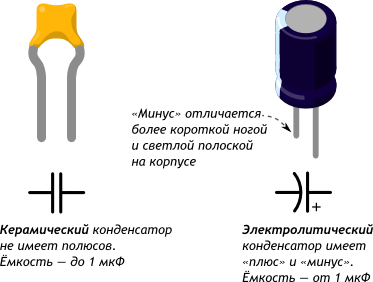Основные характеристики
Ёмкость - Фарад(C)
Максимальное напряжение - Вольт(V)
Кодирование номинала
Номинал в пФ записан на корпусе. Первые 2 цифры — основание, 3-я — множитель. Например:
•220 = 22 × 100 пФ = 22 пФ
•471 = 47 × 101 пФ = 470 пФ
•103 = 10 × 103 пФ = 10 000 пФ = 10 нФ
•104 = 10 × 104 пФ = 100 000 пФ = 100 нФ
Поведение
Если подаваемое напряжение больше внутреннего накопленного, конденсатор будет заряжаться.
Если внешнее напряжение меньше внутреннего, конденсатор будет отдавать заряд.
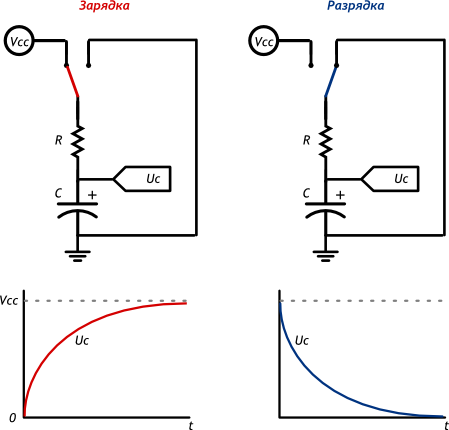Время заряда и разряда
Для связывания уровня заряда конденсатора с временем используют понятие «постоянной времени τ»:
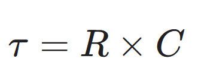За τ секунд конденсатор заряжается или разряжается на 63%
За 5×τ секунд конденсатор заряжается или разряжается на 99%
Если резистора в схеме нет, его роль исполняет паразитное сопротивление проводов, разъёмов, дорожек, составляющее доли Ома
Резистор
Резистор — искусственное «препятствие» для тока. Сопротивление в чистом виде. Резистор ограничивает силу тока, переводя часть электроэнергии в тепло.
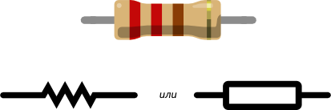Основные характеристики
Сопротивление - Ом(R)
Мощность - Ватт(P)
Цветовая кодировка резисторов
Наносить номинал резистора на корпус числами — дорого и непрактично: они получаются очень мелкими. Поэтому номинал и допуск кодируют цветными полосками.
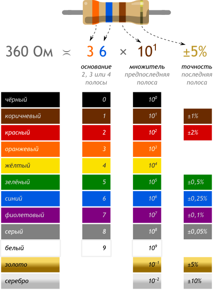Разные серии резисторов содержат разное количество полос, но принцип расшифровки одинаков.
Цвет корпуса резистора может быть бежевым, голубым, белым. Это не играет роли.
Если не уверены в том, что правильно прочитали полосы, можете проверить себя с помощью мультиметра.
Типовые номиналы для экспериментов
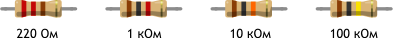Диод
Диод — это электрический «ниппель». У него есть 2 полюса: анод и катод. Ток пропускается только от анода к катоду.
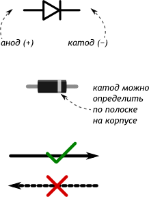Основные характеристики
Падение прямого напряжения - Вольт(VF)
Максимальное сдерживаемое обратное напряжение - Вольт(VDC)
Максимальный прямой ток - Ампер(IF)
Вольт-амперная характеристика
После того, как напряжение в прямом направлении превысит небольшой порог VF диод открывается и начинает практически беспрепятственно пропускать ток, который создаётся оставшимся напряжением.
Если напряжение подаётся в обратном направлении, диод сдерживает ток вплоть до некоторго большого напряжения VDC после чего пробивается и работает также, как в прямом направлении.
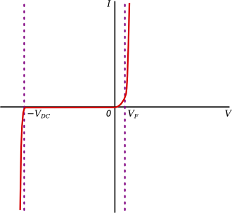Виды диодов
Выпрямительный диод
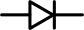Также известен как защитный, кремниевый
VF=0,7B
VDC — сотни или тысячи вольт
Открывается медлено
Восстанавливается после пробоя обратным током
Диод Шоттки
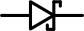Шоттки — фамилия его изобретателя. Также известен как сигнальный, германиевый.
VF=0,3B
VDC — десятки вольт
Открывается быстро
Сгорает после пробоя обратным током
Диод Зеннера
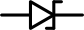Зеннер — фамилия его изобретателя. Также известен как стабилитрон
VF=1B
VDC — фиксированное значение на выбор
Умышленно используется в обратном направлении как источник фиксированного напряжения
Светодиод
Светодиод (англ. Light Emitting Diode или просто LED) — энергоэффективная, надёжная, долговечная «лампочка».
Светодиод — вид диода, который светится, когда через него проходит ток от анода (+) к катоду (−).

Основные характеристики
Падение напряжения - Вольт(VF)
Номинальный ток - Ампер(I)
Интенсивность (яркость) - Кандела(IV)
Длина волны (цвет) - Нанометр(λ)
Восприятие световых волн человеком
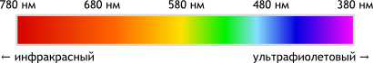Типовая схема включения
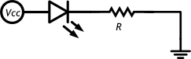Собственное сопротивление светодиода после насыщения очень мало, и без резистора, ограничивающего ток через светодиод, он перегорит.
Порядок «резистор до» или «резистор после» — не важен.
Поиск подходящего резистора
Рассчитаем какой резистор R в приведённой схеме нам нужно взять, чтобы получить оптимальный результат. Предположим, что у нас такой светодиод и источник питания:
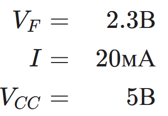Найдём оптимальное сопротивление R и минимально допустимуюмощность резистора PR.
Сначала поймём какое напряжение должен взять на себя резистор:
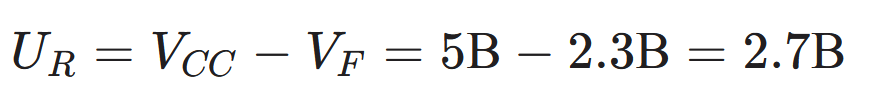По закону Ома найдём значение сопротивления, которое обеспечит такое падение:
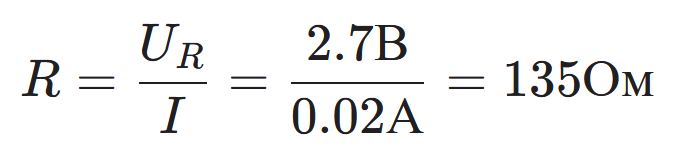Таким образом:
При сопротивлении более 135 Ом яркость будет ниже заявленной.
При сопротивлении менее 135 Ом срок жизни светодиода будет меньше.
Теперь найдём мощность, которую при этом резистору придётся рассеивать:
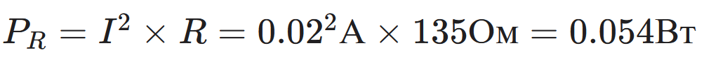Это означает, что при мощности резистора менее 54 мВт резистор перегорит.
Простое правило
Чтобы не заниматься расчётами резистора каждый раз во время проведения экспериментов, можно просто запомнить правило для самого типичного сценария.
Для питания 1 светодиода на 20 мА от 5 В используйте резистор от 150 до 360 Ом.